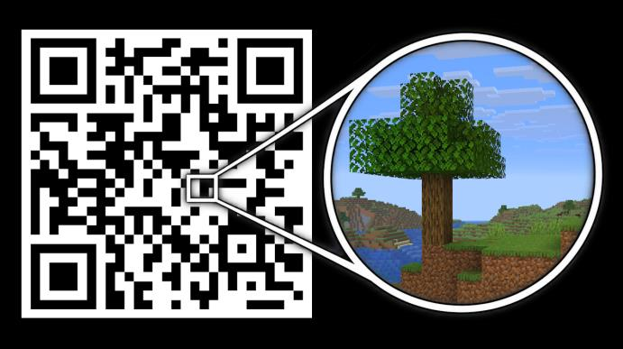
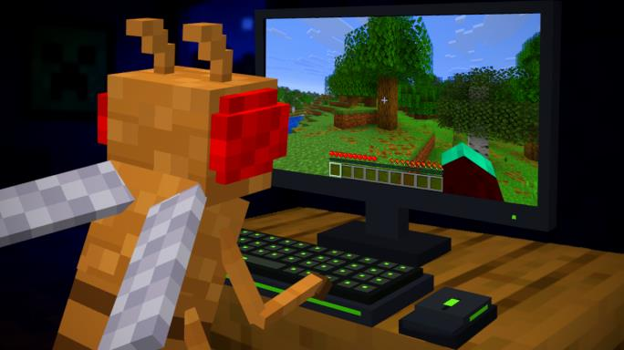
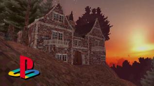
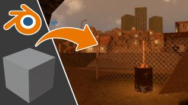
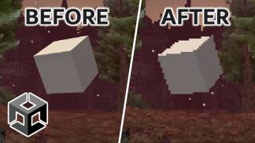
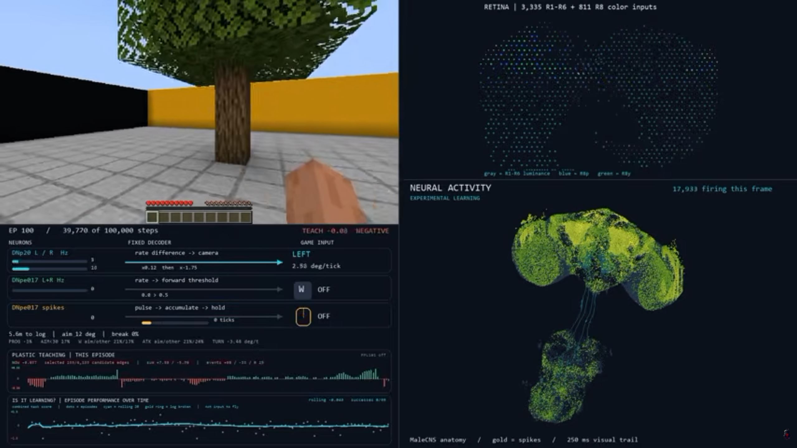

01
This QR Code Contains Minecraft
20K views in 3 weeks
I built a playable version of Minecraft small enough to fit inside a QR code.
Hacktic / media kit
Most videos start with a question I want to answer or a project I want to build, and follow the process of making it work.
// programming + games + technical experiments


recent videos
Recent videos combine programming and game development with clear, visual technical ideas.
20K views in 3 weeks
I built a playable version of Minecraft small enough to fit inside a QR code.
41K views in 1 week
I used a public fruit-fly connectome to build a simulated nervous system and use it to control Minecraft.
some other things I've made
Many older videos continue to find new audiences through YouTube search and recommendations long after publication.

518K+ views
160K+ views
135K+ viewschannel & audience
The audience is focused on programming, gaming and technical projects. The figures below update automatically from YouTube where possible.
United States 18.5% · United Kingdom 4.3% · Germany 3.4% · Canada 2.7%
about me
Before Hacktic I worked on Star Citizen / Squadron 42 and at Deep Silver FISHLABS.
I make Hacktic independently: I develop the projects, write and record the videos, and edit them myself.
// previous roles
Gameplay Programmer
Star Citizen / Squadron 42
Core Technology Programmer
Deep Silver FISHLABS
Independent game developer

working together
The usual format is a 30–60 second sponsored integration in a regular Hacktic video. I write and present the segment myself.
Developer tools, hardware, game-development products, hosting and creative software are generally the strongest fit.
I'm also open to dedicated videos when the product itself supports a strong video idea.
sponsorships & collaborations
Please include the product, campaign timing and the kind of integration you're looking for.
hackticdev@outlook.com ↗ YouTube · @hackticdev